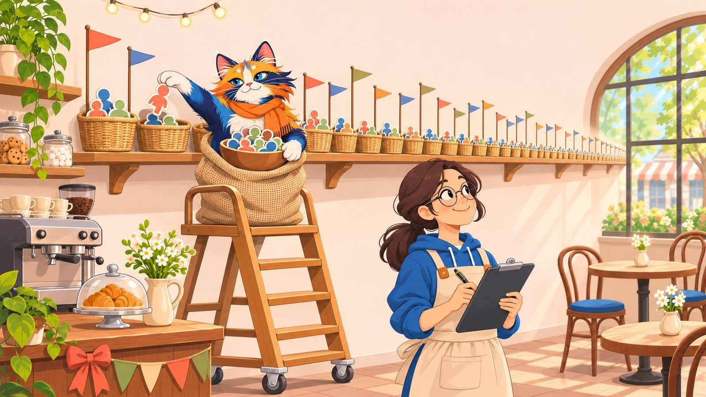

Шаг 4 из 10
Толпа предсказуема

В шаге 3 мы видели: разница между одинаковыми группами прыгает. Но прыгает она не как попало. У шума есть форма, и её можно предсказать. Это главный секрет, на котором держится весь анализ A/B-тестов.
Один гость непредсказуем
Вот сколько заказов делают гости приложения за неделю. Больше половины не заказывают ничего, многие — один-два раза, а редкие фанаты — двадцать и больше. В среднем выходит около одного заказа на человека.
По горизонтали — заказов за неделю, по вертикали — доля гостей.
Угадать, сколько закажет случайный гость, невозможно. А если взять 100 случайных гостей и посчитать их среднее? И повторить так много раз? Какой формы будет гистограмма этих средних?
Выбери вариант.
Собираем средние
Выбери, сколько гостей брать за раз. Каждая выборка даёт одно число — среднее число заказов у этих гостей. Складывай эти числа в гистограмму.
Крайности гасят друг друга

В выборку из ста гостей обычно попадает пара фанатов, несколько десятков «один-два раза» и много тех, кто ничего не заказал. Если фанатов случайно оказалось трое, среднее немного вырастет. Если ни одного, немного упадёт. Сильно отклониться среднее может, только если много случайностей сложатся в одну сторону сразу, а это редкость.
Поэтому средние кучкуются вокруг настоящего среднего, а чем дальше от него, тем реже. Так и получается колокол. И неважно, насколько странно ведёт себя один человек: для колокола нужно только, чтобы людей было много и они не зависели друг от друга.
Как это используют платформы экспериментов

В эксперименте одна группа — это один набор гостей, и среднее по ней одно. Как узнать, насколько оно шатается? Многие платформы делают так: раскладывают гостей группы по 256 корзинам тем же хешем от id и считают среднее в каждой корзине. Получается 256 «маленьких экспериментов» сразу.
Три вопроса про колокол
Метрика — выручка на гостя за месяц. У большинства 0, у некоторых тысячи. Ляжет ли колоколом среднее по 50 000 гостей, если повторять эксперимент много раз?
Колокол получается у среднего, а не у отдельных людей. Чем неровнее метрика, тем больше людей нужно, но 50 000 обычно хватает с запасом.
Заказы одного гостя за неделю распределены колоколом?
У одного человека распределение какое угодно. Колоколом ложится среднее по многим людям.
Зачем платформа раскладывает гостей группы по корзинам?
Шум корзины никуда не убирают, его измеряют. По разбросу между корзинами видно, насколько шатается среднее всей группы. И считать так быстро и дёшево.
Один непредсказуем, толпа предсказуема
- Заказы одного гостя распределены как угодно: много нулей и длинный хвост.
- Среднее по многим независимым гостям ложится колоколом вокруг настоящего среднего. Крайности гасят друг друга.
- Чем больше гостей в выборке, тем уже колокол.
- Платформы экспериментов раскладывают гостей по корзинам и по разбросу между корзинами видят, насколько шатается среднее.
Теперь у того, что мы сделали руками, есть названия:
- Нормальное распределение
- тот самый колокол: значения кучкуются вокруг середины и редеют к краям
- ЦПТ
- центральная предельная теорема: среднее многих независимых величин распределено почти нормально, какими бы ни были сами величины
- Бакет
- корзина, в которую гость попадает по хешу; разброс средних по бакетам показывает шум

Дальше, шаг 5: от чего зависит ширина колокола и почему вчетверо больше гостей дают только вдвое более точный ответ.